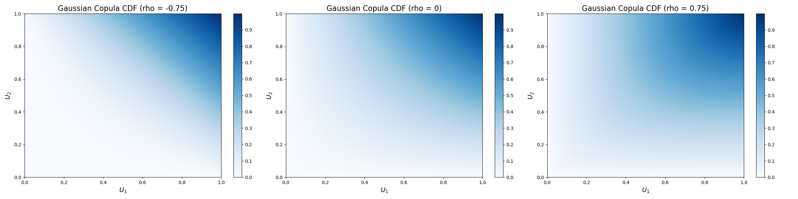

As a brief aside from multivariate distributions, there is the Probability Integral Transform.
Definition
Let \(X\) be a continuous random variable with CDF \(F_X(x)\). The Probability Integral Transform states that the random variable U, given by:
$$U=F_X(X)$$
is distributed uniformly over the interval [0,1]; i.e., \(U\sim\mathcal{U}(0,1)\).
Multivariate Probability Integral Transform
Let \(X=(X_1,X_2,\dots,X_n)\) be a random vector with continuous marginal CDFs \(F_i(x)=P(X_i\lt x)\).
By performing the PIT on each element, we get a random vector where each element has U(0,1) marginals:
$$(U_1,U_2,\dots,U_n)=(F_1(X_1),F_2(X_2),\dots,F_n(X_n))$$
Continuing with our random vector \(U\), we define a copula function as:
$$C(u_1,u_2,\dots,u_n)=P(U_1\leq u_1, U_2\leq u_2,\dots, U_n\leq u_n)$$
Gaussian Copula
We previously covered how to generated correlated Gaussian variables. We can combine this with our multivariate Probability Integral Transform to get dependent uniforms.
Getting the Copula
A corollary to the probability integral transform that we've seen with the quantile function is that given a variable in the interval (0,1), we can transform it a random variable distributed from a given distribution by applying the inverse CDF.
For the Gaussian copula, we apply the normal quantile function to turn our uniform values into normally distributed. If there is a Gaussian copula, then we would see this result distributed as a correlated multivariate normal.

Gaussian Copula at Different Rho
Sampling from the Copula
Sampling is going the reverse of above. We can generate correlated normals through a multivariate normal distribution. We then apply the marginal CDF to each element to get correlated quantiles. We then apply the quantile function of choice to each element to get them into having marginal distributions of whatever we would like.
T-Copula
A similar copula can be performed with heavier tails using the multivariate T-distribution as we did for the Gaussian copula.
T Copula at Different Rho
Copula Practice Problems
Generate pairs of random variables (X,Y) such that:
The marginal distribution of X is exponential with \(\lambda=1\)
The marginal distribution of Y is uniform on interval \([0,1]\)
The dependence structure between X and Y is given by a Gaussian copula coefficients \(\rho=0.7\)
Output this as a scatter plot. Also output histograms of each marginal.
Generate pairs of random variables (X,Y) such that:
The marginal distribution of X is exponential with \(\lambda=2\)
The marginal distribution of Y is exponential with \(\lambda=3\)
The dependence structure between X and Y is given by a Gaussian copula coefficients \(\rho=-0.3\)
Output this as a scatter plot. Also output histograms of each marginal.
Generate pairs of random variables \((X, Y)\) such that:
The marginal distribution of \(X\) is a standard normal distribution.
The marginal distribution of \(Y\) follows a Pareto distribution with shape parameter \(\alpha = 2\) and scale parameter \(x_m = 1\).
The dependence structure is defined by a Gaussian copula with correlation coefficient \(\rho = -0.5\).
Compute the sample correlation coefficient between \(X\) and \(Y\), and discuss whether it aligns with the specified dependence.
Create pairs \((X, Y)\) where:
\(X\) follows a gamma distribution with shape \(k=2\) and scale \(\theta=2\).
\(Y\) follows a logistic distribution with location \(m=0\) and scale \(s=1\).
The dependence is modeled using a Gaussian copula with correlation coefficient \(\rho = 0.3\).
Simulate 2,000 pairs and plot the histograms of \(X\) and \(Y\) to verify the marginals. Assess the dependence by calculating Kendall's tau and interpret the result.